Getting Started with OpenVCAD#
This is the practical getting started guide for OpenVCAD version 3.x.x+ (Attribute Modeling).
If you are new to OpenVCAD, start with Theory and Motivation first. That guide explains why OpenVCAD models both geometry and internal attributes. This guide turns that model into code: you will create pyvcad designs, attach attributes, and preview the results with pyvcad_rendering.
What You Will Learn#
The lessons below provide a comprehensive overview for beginners, covering how to:
Create geometry using the updated core engine.
Apply functional gradients as attributes to your models.
Render designs and interact with the results.
Note: If you are transitioning from OpenVCAD 2.x.x, this guide will highlight the major architectural shifts introduced by Attribute Modeling. Attribute Modeling is not directly backwards compatible; however, all functionality is reproducible using the new Attribute Modeling framework.
Prerequisites & Setup#
Before beginning, ensure you have the OpenVCAD library installed. For detailed installation and environment setup instructions, please refer to examples/project_example.
Once installed, you can quickly verify things are working from Python:
import pyvcad as pv
print("OpenVCAD version:", pv.version())
If this prints a version string without raising an exception you are ready to run the examples below.
The Modeling Mental Model#
In OpenVCAD, an object is a composition of two implicit forms:
Implicit geometric form: a signed distance field (SDF). Positive values are outside the object, negative values are inside, and zero is the surface.
Implicit attribute form: a collection of named fields attached to that geometry. Attributes can represent values such as temperature, modulus, color, density, Shore hardness, or volume fractions.
Attribute expressions can depend on Cartesian position (x, y, z) and on the signed distance d returned by the geometry evaluation. That means an attribute can vary across the object, along a build direction, around a radius, or relative to the surface itself.
As a user, you normally model continuous fields. Sampling those fields into pixels, voxels, slicer settings, meshes, or machine files is handled later by renderers and compilers.
Workflow Overview#
A single pyvcad design can feed multiple downstream workflows. You will mostly use the renderer in this guide because it gives fast interactive feedback, but the same design tree can later go to compiler workflows.
OpenVCAD workflow
Detailed compiler behavior lives in the Compilers guide. The important idea for this tutorial is that you define geometry and attributes once, then choose the downstream consumer that needs those fields.
Attribute Resolvers#
Some workflows need attributes that are computed from other attributes. For example, you might model SHORE_HARDNESS because that is the design intent, then derive VOLUME_FRACTIONS for an inkjet compiler or TEMPERATURE and FLOW_RATE for a filament workflow. OpenVCAD supports that pattern through pv.AttributeModifier and pyvcad_attribute_resolver.
This guide only introduces the modeling side. When you are ready to translate design-intent fields into compiler-facing fields, see the Attribute Modifier and Resolver Guide.
Running the Examples#
All scripts for this guide are located in examples/1_getting_started. To run a script and launch the OpenVCAD render preview, use:
python <SCRIPT_NAME>.py
Each example in this guide includes an animated WebP for quick reference. Running the scripts locally allows you to interact with these 3D previews in real time.
Internally, pyvcad_rendering.Render(...) creates a small GUI application and remembers per-script view settings (camera, selected attribute, clipping planes, etc.) across runs. If you tweak the view for one lesson and re-run the same script, it will reopen with the last-used settings for that file, which is handy when iterating on designs. If you open another design file this will reset the render settings.
Note: For examples featuring applied attributes, you must select the specific attribute via Object -> Selected Attribute in the renderer menu to view the full-color preview.
Lesson 1: Hello World#
Let’s start by creating a simple geometric primitive. In OpenVCAD, models are built using Node trees, where the leaves are primary shapes like spheres, cones, or prisms.
The pv.Vec3 class you see below is OpenVCAD’s 3D vector type. You can construct it from three floats (Vec3(x, y, z)). In these basic examples, we treat the numeric values as arbitrary units; in a real workflow you can decide whether they correspond to millimeters, centimeters, or any other length unit that matches your printer or simulation.
import pyvcad as pv
import pyvcad_rendering as viz
# A simple rectangular prism. Create a 20x20x20 cube centered at the origin
radius = 10.0
dimensions = pv.Vec3(radius*2, radius*2, radius*2)
center = pv.Vec3(0, 0, 0)
cube = pv.RectPrism(center, dimensions)
root = cube
viz.Render(root)
You can estimate the model volume directly from any node:
volume_mm3 = cube.volume()
print("Estimated volume:", volume_mm3, "mm^3")
volume() samples the node’s signed distance field over its bounding box. If your model units are millimeters, the returned value is in mm^3. For tighter estimates, pass a smaller sample size such as cube.volume(0.25).
The diagram below introduces the basic format used throughout this guide. The dot and arrow at the top show where evaluation enters the tree, and the first example is just a single geometry leaf at the root. Later lessons will wrap that same kind of geometry in composition, transform, and attribute layers.
Tree / DAG Structure
Legend
Render

Lesson 2: Constructive Solid Geometry (CSG)#
You can combine basic shapes using CSG boolean operations, such as Union, Intersection, and Difference. This lesson just shows how CSG works for just the geometry in OpenVCAD. You will learn more about how it applies to attributes later.
CSG nodes like pv.Union, pv.Intersection, and pv.Difference are composition nodes that take one or more child Node objects and create a new implicit object. Their behavior is defined at the signed-distance level: a Union takes the minimum of its children, an Intersection keeps only the overlapping region, and a Difference subtracts one object’s geometry from another. This means you can freely nest CSG operations and still get smooth, watertight geometry.
Union#
The Union operation merges multiple shapes into one continuous volume.
left_sphere = pv.Sphere(pv.Vec3(-3, 0, 0), 5.0)
right_sphere = pv.Sphere(pv.Vec3(3, 0, 0), 5.0)
# Merge the two spheres together
root = pv.Union(left_sphere, right_sphere)
viz.Render(root)
Tree / DAG Structure
Legend
Render

Intersection#
The Intersection operation keeps only the overlapping regions of the supplied shapes.
left_sphere = pv.Sphere(pv.Vec3(-3, 0, 0), 5.0)
right_sphere = pv.Sphere(pv.Vec3(3, 0, 0), 5.0)
# Keep only the overlapping region
root = pv.Intersection(left_sphere, right_sphere)
viz.Render(root)
Tree / DAG Structure
Render

Difference#
The Difference operation subtracts the right shape from the left shape.
left_sphere = pv.Sphere(pv.Vec3(-3, 0, 0), 5.0)
right_sphere = pv.Sphere(pv.Vec3(3, 0, 0), 5.0)
# Subtract right from left
root = pv.Difference(left_sphere, right_sphere)
viz.Render(root)
Tree / DAG Structure
Render

Bringing CSG Together#
Note: this design is based on the object here
By combining these operations in a nested tree, we can build complex objects.
base_cylinder = pv.Cylinder(pv.Vec3(0,0,0), 2.0, 9.0)
root = pv.Difference(
pv.Intersection(
pv.RectPrism(pv.Vec3(0,0,0), pv.Vec3(8,8,8)),
pv.Sphere(pv.Vec3(0,0,0), 5.5)
),
pv.Union(
base_cylinder,
pv.Union(
pv.Rotate(90.0, 0.0, 0.0, base_cylinder),
pv.Rotate(0.0, 90.0, 0.0, base_cylinder)
)
)
)
viz.Render(root)
Tree / DAG Structure
Legend
Render

Lesson 3: Transformations#
You can move, rotate, and scale nodes. In OpenVCAD, transformations act as container nodes wrapping their children, allowing transformations to apply globally to branches.
translation#
Translations are represented by the pv.Translate node, which is a unary node that stores a 3D offset and applies the inverse offset when evaluating the child. Conceptually, it moves the entire subtree in Cartesian space without changing the signed-distance definition of its child.
cube = pv.RectPrism(pv.Vec3(0, 0, 0), pv.Vec3(10, 10, 10))
translated_cube = pv.Translate(15.0, 0.0, 0.0, cube)
root = pv.Union(cube, translated_cube)
viz.Render(root)
Tree / DAG Structure
Legend
Render

Rotation#
Rotations use angles (in degrees) for Pitch, Yaw, and Roll.
The pv.Rotate node is also unary and internally stores Euler angles. The rotation is applied in the order roll → yaw → pitch. This is important if you start composing large rotations or using non-axis-aligned orientations, because changing the order of Euler rotations will change the final orientation of your geometry.
cube = pv.RectPrism(pv.Vec3(10, 0, 0), pv.Vec3(10, 10, 10))
rotated_cube = pv.Rotate(0.0, 45.0, 0.0, cube)
root = pv.Union(cube, rotated_cube)
viz.Render(root)
Tree / DAG Structure
Render

Scale#
Scaling uniformly multiplies the object size across x, y, and z dimensions.
The pv.Scale node keeps track of one positive uniform scale factor. During evaluation, it scales incoming query points by the inverse factor so the child sees its original local coordinate space, then scales the returned signed distance back into world units. This allows you to resize complex subtrees without having to manually adjust attribute expressions or child geometry definitions.
cube = pv.RectPrism(pv.Vec3(0, 0, 0), pv.Vec3(10, 10, 10))
scaled_cube = pv.Scale(2.0, cube)
moved_scaled = pv.Translate(20.0, 0.0, 0.0, scaled_cube)
root = pv.Union(cube, moved_scaled)
viz.Render(root)
Tree / DAG Structure
Render

Lesson 4: Attributes#
Attributes define continuous field properties over a volume (like modulus or temperature). Canonical string names and matching *_TYPE values are listed in the Python API under Default attribute names and types.
Let’s define a simple constant value attribute:
pv.FloatAttribute is a flexible container for scalar fields. You can construct it in several ways:
Constant value:
FloatAttribute(5.0)(as shown below) stores a single number.Math expression string:
FloatAttribute("0.18 * z + 5.5")defines a function of \((x, y, z, d)\) evaluated at runtime.Numba
@cfuncfunction:FloatAttribute(my_function)accepts a compiled function with signaturefloat64(float64, float64, float64, float64).Sampled volume:
FloatAttribute(vdb_volume)samples from a VDB volume in the core library.
All of these ultimately provide the same interface to the rest of the system: a function that, given a spatial point (and signed distance), returns a float.
If you want to write an attribute as a Python function, annotate it with Numba @cfunc and pass that function to the attribute. The full setup is covered in the Python functions for attributes guide.
cube = pv.RectPrism(pv.Vec3(0, 0, 0), pv.Vec3(10, 10, 10))
# Define a static float attribute (e.g. modulus in MPa)
my_attr = pv.FloatAttribute(5.0)
cube.set_attribute(pv.DefaultAttributes.MODULUS, my_attr)
materials = pv.default_materials
root = cube
viz.Render(root, materials)
Tree / DAG Structure
Legend
Render (modulus)

We can also define spatially varying attributes using math expressions. The variables x, y and z correspond to physical coordinates.
cube = pv.RectPrism(pv.Vec3(0, 0, 0), pv.Vec3(10, 10, 50))
# A gradient modulus that increases linearly along Z. Cube spans z from -25 to +25.
gradient = pv.FloatAttribute("0.18 * z + 5.5")
cube.set_attribute(pv.DefaultAttributes.MODULUS, gradient)
materials = pv.default_materials
root = cube
viz.Render(root, materials)
Tree / DAG Structure
Render (modulus)

If you want to define the same kind of gradient with a Python function, annotate the function with Numba @cfunc and pass it to FloatAttribute. For the full workflow and rules for each attribute type, see the Python functions for attributes guide.
Here is the same linear modulus gradient as the example above, but written as a small Numba function:
import pyvcad as pv
import pyvcad_rendering as viz
from numba import cfunc, types
cube = pv.RectPrism(pv.Vec3(0, 0, 0), pv.Vec3(10, 10, 50))
@cfunc(types.float64(types.float64, types.float64, types.float64, types.float64))
def modulus_gradient(x, y, z, d):
return 0.18 * z + 5.5
cube.set_attribute(
pv.DefaultAttributes.MODULUS,
pv.FloatAttribute(modulus_gradient),
)
materials = pv.default_materials
root = cube
viz.Render(root, materials)
The tree structure is the same as the expression-based gradient example above. Only the implementation of the Float attribute changes from a math expression string to a compiled Python function.
Tree / DAG Structure
Lesson 5: Colors#
OpenVCAD uses Vec4Attribute to assign continuous color gradients across an object using math expressions. Values represent R, G, B, and Alpha bounded from 0 to 1.
pv.Vec4Attribute is the vector-valued analog of FloatAttribute. Each component can be provided either as its own expression string, as a Numba @cfunc function, or as a constant scalar. When used for color, keep each channel in [0, 1] so that renderers and downstream compilers can interpret the values consistently as linear RGBA.
cube = pv.RectPrism(pv.Vec3(0, 0, 0), pv.Vec3(50, 10, 10))
# Green (left) to magenta (right) along X
r_expr = "x/50 + 0.5"
g_expr = "-x/50 + 0.5"
b_expr = "x/50 + 0.5"
a_expr = "1.0"
color_gradient = pv.Vec4Attribute(r_expr, g_expr, b_expr, a_expr)
cube.set_attribute(pv.DefaultAttributes.COLOR_RGBA, color_gradient)
materials = pv.default_materials
root = cube
viz.Render(root, materials)
Tree / DAG Structure
Legend
Render (color)

Lesson 6: Volume Fractions#
Volume fractions define complex mixtures of multiple base materials simultaneously across an object—a critical feature for 3D multi-material printing. At any given point in space, the sum of all fractions must equal 1.0.
The pv.VolumeFractionsAttribute class takes a list of (expression_string, material_id) tuples. Material IDs come from your MaterialDefs object (e.g. materials.id("blue")). Each expression defines one scalar field per material; at any spatial point the attribute evaluates all of them and returns a mapping from material ID to fraction value.
import pyvcad as pv
import pyvcad_rendering as viz
materials = pv.default_materials
cube = pv.RectPrism(pv.Vec3(0, 0, 0), pv.Vec3(50, 10, 10))
# Volume fractions: list of (expression, material_id). Fractions must sum to 1.0.
fraction_gradient = pv.VolumeFractionsAttribute(
[
("x/50 + 0.5", materials.id("blue")),
("-x/50 + 0.5", materials.id("red"))
]
)
cube.set_attribute(pv.DefaultAttributes.VOLUME_FRACTIONS, fraction_gradient)
root = cube
viz.Render(root, materials)
Tree / DAG Structure
Legend
Render (volume fractions)

Here pv.default_materials returns a MaterialDefs object loaded from a JSON configuration bundled with the library. It knows, for each material, a stable ID, a name, and a representative RGBA color. When visualizing volume fractions in the renderer, those palette colors help you see how the mixture changes through the part. You can also construct your own MaterialDefs from a custom config file if you need printer-specific material sets. You can find the default config files in configs/
Lesson 7: The Node Hierarchy and Attribute Priority#
Attributes are assigned to structural nodes in your CSG tree. Node rules determine priority:
Inheritance: A child without an attribute inherits it from its parent.
Override: If a parent has an attribute assigned, it explicitly overrides the attributes of its children.
CSG Handling: When two shapes are Unioned/Intersected without a parent override, they retain their distinct internal attributes.
These rules mirror how the underlying attribute system walks the Node tree: attributes are collected from the root down to the current leaf, and conflicts are resolved based on where in the tree a given attribute is attached. For binary CSG nodes like Union, if both children define the same attribute and no parent override is present, the first child’s attribute wins in the overlapping region, which is why the left cube “owns” the mixed zone in the example below.
left_cube = pv.RectPrism(pv.Vec3(-2.5, 0, 0), pv.Vec3(10, 10, 10))
red_attr = pv.Vec4Attribute("1.0", "0.0", "0.0", "1.0")
left_cube.set_attribute(
pv.DefaultAttributes.COLOR_RGBA, red_attr)
right_cube = pv.RectPrism(pv.Vec3(2.5, 0, 0), pv.Vec3(10, 10, 10))
blue_attr = pv.Vec4Attribute("0.0", "0.0", "1.0", "1.0")
right_cube.set_attribute(
pv.DefaultAttributes.COLOR_RGBA, blue_attr)
root = pv.Union(left_cube, right_cube)
viz.Render(root, pv.default_materials)
The comparison diagram below highlights the two priority cases: without a parent override, the child attributes remain active and the left child owns the overlap region; once COLOR_RGBA is attached to the Union, that parent-level attribute replaces both leaf assignments.
Tree / DAG Structure
Legend
Leaf level handling

Parent level override
If we attached an attribute to the root Union node, it would apply across both boxes natively, dropping the individual red and blue assignments.

Lesson 8: Coordinate Spaces#
All attributes operate in the local space of the node they are assigned to. That means if you move/rotate a node containing an attribute, the attribute will translate/rotate with the geometry!
Formally, transform nodes like Translate, Rotate, and Scale are unary nodes that apply a change of variables to both geometry and attributes: when the system evaluates a point in world space, it is first mapped back into the child’s local coordinates before sampling the signed-distance field and any attached attributes.
# A rectangular prism, long along X
prism = pv.RectPrism(pv.Vec3(0, 0, 0), pv.Vec3(20, 4, 4))
# Attach a color gradient that fits the un-rotated X extent [-10, +10]
color_gradient = pv.Vec4Attribute(
"clamp((x + 10.0) / 20.0, 0.0, 1.0)", "0.0",
"1.0 - clamp((x + 10.0) / 20.0, 0.0, 1.0)", "1.0"
)
prism.set_attribute(pv.DefaultAttributes.COLOR_RGBA, color_gradient)
# Rotate the prism 90 degrees about Z — the gradient rotates WITH the object
root = pv.Rotate(0.0, 0.0, 90.0, prism)
viz.Render(root, pv.default_materials)
To apply a global static gradient regardless of rotation, apply the attribute AFTER the rotation using an Identity node:
# Start with an attribute-less rectangular prism
prism = pv.RectPrism(pv.Vec3(0, 0, 0), pv.Vec3(20, 4, 4))
rotated_prism = pv.Rotate(0.0, 0.0, 90.0, prism)
# The Identity Node passes geometry unharmed but provides a new coordinate layer!
root = pv.Identity(rotated_prism)
color_gradient = pv.Vec4Attribute(
"clamp((x + 10.0) / 20.0, 0.0, 1.0)", "0.0",
"1.0 - clamp((x + 10.0) / 20.0, 0.0, 1.0)", "1.0"
)
root.set_attribute(pv.DefaultAttributes.COLOR_RGBA, color_gradient)
viz.Render(root, pv.default_materials)
The comparison diagram below shows the same attribute expression attached at two different points in the tree: on the RectPrism before rotation, and on Identity after rotation.
Tree / DAG Structure
Legend
Render (gradient rotates with geometry)

Render (world-aligned gradient via Identity)

Lesson 9: Bringing It All Together#
A single object can carry multiple attributes simultaneously. In the render window, use the dropdown in the top-right corner to select which attribute to visualize.
Internally, those entries correspond to names defined in pv.DefaultAttributes (e.g. MODULUS, COLOR_RGBA, VOLUME_FRACTIONS; see Default attribute names and types). At any given sample point, the engine evaluates all attached attributes in one pass and then the renderer simply chooses which field to map to colors.
import pyvcad as pv
import pyvcad_rendering as viz
materials = pv.default_materials
cube = pv.RectPrism(pv.Vec3(0, 0, 0), pv.Vec3(20, 20, 20))
modulus = pv.FloatAttribute("z + 10")
cube.set_attribute(pv.DefaultAttributes.MODULUS, modulus)
color = pv.Vec4Attribute(
"x/20 + 0.5",
"1.0 - (x/20 + 0.5)",
"x/20 + 0.5",
"1.0"
)
cube.set_attribute(pv.DefaultAttributes.COLOR_RGBA, color)
fractions = pv.VolumeFractionsAttribute(
[
("-y/20 + 0.5", materials.id("gray")),
("y/20 + 0.5", materials.id("green"))
]
)
cube.set_attribute(pv.DefaultAttributes.VOLUME_FRACTIONS, fractions)
root = cube
viz.Render(root, materials)
Tree / DAG Structure
Legend
Modulus (float)

Color (Vec4)

Volume fractions

Visualizing Your Design Tree#
When a model starts mixing CSG, transforms, and attributes, it is often helpful to inspect the authored tree directly. OpenVCAD can export any root node as Mermaid source or render it straight to an image. The full mug example used below lives in examples/rendering/demo_tree_visualizer.py.
import pyvcad_rendering as viz
# root = your existing OpenVCAD design tree
viz.Render_Tree_Diagram(root, "my_design_tree.mmd") # Mermaid source
viz.Render_Tree_Diagram(root, "my_design_tree.svg") # Requires `mmdc`
viz.Render_Tree_Legend("openvcad_master_legend.svg")
Saving to .mmd gives you an editable Mermaid diagram, while .svg or .png uses the Mermaid CLI (mmdc) to produce a finished asset. The legend is reusable across diagrams, so you can export it once and pair it with any design tree you generate.
Note: To render
.svgor.pngdirectly, first install Node.js andnpmif they are not already on your machine, then install the Mermaid CLI withnpm install -g @mermaid-js/mermaid-cli. Once that completes,mmdcshould be available on yourPATH.
Tip: If you do not want to install
mmdc, save the diagram as.mmdand open it in the Mermaid Live Editor.
Example Tree / DAG Structure
Master Legend
Transitioning from OpenVCAD 2.x#
If you used the OpenVCAD 2.x main branch, the biggest change is the role of volume fractions.
In the older workflow, material behavior was commonly modeled directly as volume fractions on an object. Functional grading tools existed to help define those material mixtures across space. That made sense for early multi-material workflows, but it also made volume fractions feel like the central material abstraction.
In OpenVCAD 3.x attribute modeling, volume fractions are just one attribute type. You can still create VOLUME_FRACTIONS fields, and downstream inkjet or simulation workflows can still consume them, but they no longer need to be the first thing you model. You can attach attributes anywhere in the design tree: leaf nodes, composed objects, transformed branches, or parent wrappers.
The practical shift is:
old pattern: define material volume fractions directly, often through functional grading nodes
new pattern: attach the attribute that expresses your intent, then derive or compile the attributes needed by the target workflow
This is why the older functional grading node is obsolete in the attribute-modeling branch. Functional grading is now a general capability of every expression-based attribute. A MODULUS gradient, COLOR_RGBA gradient, TEMPERATURE field, and VOLUME_FRACTIONS blend all use the same modeling pattern: attach a field to the node where that field should live.
Appendix: Attribute Expressions, Coordinate Systems, and Default Names#
Expression Variables and Coordinate Systems#
Expression strings used by FloatAttribute, Vec4Attribute, and VolumeFractionsAttribute are parsed and compiled at runtime. They support a standard set of arithmetic operations and common math functions (e.g. sin, cos, sqrt, etc.), and they always receive the local coordinates for the node they are attached to.
For spatial grading you can use:
Cartesian coordinates:
x,y,zCylindrical coordinates:
rho,phicSpherical coordinates:
r,theta,phisSigned distance:
d(distance to the implicit surface; useful for boundary layers, fuzzy skins, etc.)
These variables are available consistently across expression-based attribute types.
Attribute Return Types vs. Named Types#
Every attribute in OpenVCAD has:
A return type: what kind of value it yields at a sample point (e.g. scalar float,
vec3,vec4, or a volume-fraction set).A named type: a string key that describes what the value represents (e.g.
"modulus","temperature","color_rgba","volume_fractions").
From the renderer’s perspective, you can attach attributes with any user-defined names and then select among them in the attribute dropdown; as long as the return type is something the renderer knows how to visualize, it will happily display it.
However, the compiler layer (which translates OpenVCAD designs into printable or simulation-ready formats) expects certain standardized attribute names so it can map fields into the correct channels. This is what pv.DefaultAttributes provides: a curated set of canonical names plus their expected return types. The full Python reference is in Default attribute names and types.
When authoring new designs intended for downstream compilers, prefer the names in pv.DefaultAttributes (e.g. DefaultAttributes.MODULUS, DefaultAttributes.TEMPERATURE, DefaultAttributes.COLOR_RGBA, DefaultAttributes.VOLUME_FRACTIONS, etc.) so that your attribute fields line up with the expectations of printers, slicers, and analysis pipelines that consume OpenVCAD output.